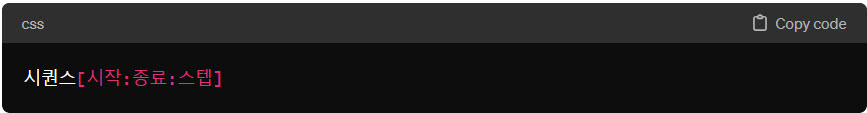

파이썬의 Sequence Data Type에 대해 설명해주세요
파이썬의 Sequence Data Type에 대해 설명해주세요
 파이썬의 시퀀스(sequence) 데이터 타입은 여러 요소들을 일렬로 순서대로 저장하는 구조입니다. 이러한 데이터 타입에는 주로 세 가지가 있습니다: list, tuple, 그리고 str (문자열). 이 시퀀스 타입들은 모두 반복 가능하며(iterable), 인덱싱과 슬라이싱을 통해 요소에 접근할 수 있습니다.
파이썬의 시퀀스(sequence) 데이터 타입은 여러 요소들을 일렬로 순서대로 저장하는 구조입니다. 이러한 데이터 타입에는 주로 세 가지가 있습니다: list, tuple, 그리고 str (문자열). 이 시퀀스 타입들은 모두 반복 가능하며(iterable), 인덱싱과 슬라이싱을 통해 요소에 접근할 수 있습니다.
List: 요소 추출, 수정, 삭제
# List 생성
my_list = ['a', 'b', 'c', 'd', 'e']
# 요소 추출
print(my_list[2]) # 출력: c
# 요소 수정
my_list[2] = 'z'
print(my_list) # 출력: ['a', 'b', 'z', 'd', 'e']
# 요소 삭제
del my_list[2]
print(my_list) # 출력: ['a', 'b', 'd', 'e']
Tuple: 요소 추출 (수정과 삭제 불가)
# Tuple 생성
my_tuple = ('a', 'b', 'c', 'd', 'e')
# 요소 추출
print(my_tuple[2]) # 출력: c
# Tuple은 불변 타입이기 때문에 요소를 수정하거나 삭제할 수 없습니다.
# my_tuple[2] = 'z' # TypeError 발생
# del my_tuple[2] # TypeError 발생
String: 문자 추출 (수정과 삭제 불가)
# String 생성
my_string = "abcde"
# 문자 추출
print(my_string[2]) # 출력: c
# String은 불변 타입이기 때문에 문자를 수정하거나 삭제할 수 없습니다.
# my_string[2] = 'z' # TypeError 발생
# del my_string[2] # TypeError 발생
파이썬 Sequence Data Type 의 슬라이스에 대해 설명해 주세요
파이썬의 시퀀스 데이터 타입에서 "슬라이스(slice)"는 시퀀스의 일부를 선택하여 새로운 시퀀스를 만들어내는 기능을 말합니다. 이는 리스트(list), 문자열(str), 튜플(tuple)과 같은 시퀀스 타입에서 사용할 수 있습니다.
슬라이싱을 사용할 때는 대괄호([]) 안에 시작 인덱스, 종료 인덱스, 그리고 선택적으로 스텝(간격)을 지정합니다. 기본적인 형태는 다음과 같습니다:

- 시작(start): 슬라이스할 범위의 시작 인덱스입니다. 이 인덱스를 포함하여 슬라이스가 시작됩니다. 시작 인덱스를 생략하면 기본값은 0입니다.
- 종료(stop): 슬라이스할 범위의 종료 인덱스로, 이 인덱스는 슬라이스에 포함되지 않습니다. 종료 인덱스를 생략하면 기본값은 시퀀스의 길이(len(시퀀스))가 됩니다.
- 스텝(step): 선택한 범위 내에서 가져올 요소의 간격입니다. 스텝을 생략하면 기본값은 1입니다.
슬라이스 예제
# 리스트 슬라이싱
numbers = [0, 1, 2, 3, 4, 5, 6, 7, 8, 9]
# 처음부터 인덱스 4까지 슬라이싱 (인덱스 5는 포함되지 않음)
print(numbers[:5]) # 출력: [0, 1, 2, 3, 4]
# 인덱스 5부터 끝까지 슬라이싱
print(numbers[5:]) # 출력: [5, 6, 7, 8, 9]
# 인덱스 2부터 인덱스 7까지 2칸 간격으로 슬라이싱
print(numbers[2:8:2]) # 출력: [2, 4, 6]
# 문자열 슬라이싱
alphabet = "abcdefghijklmnopqrstuvwxyz"
# 처음부터 'e'까지 슬라이싱 (인덱스 5는 포함되지 않음)
print(alphabet[:5]) # 출력: abcde
# 't'부터 끝까지 슬라이싱
print(alphabet[19:]) # 출력: tuvwxyz
# 전체 문자열을 2칸 간격으로 슬라이싱
print(alphabet[::2]) # 출력: acegikmoqsuwy
# 전체 문자열을 역순으로 슬라이싱
print(alphabet[::-1]) # 출력: zyxwvutsrqponmlkjihgfedcba